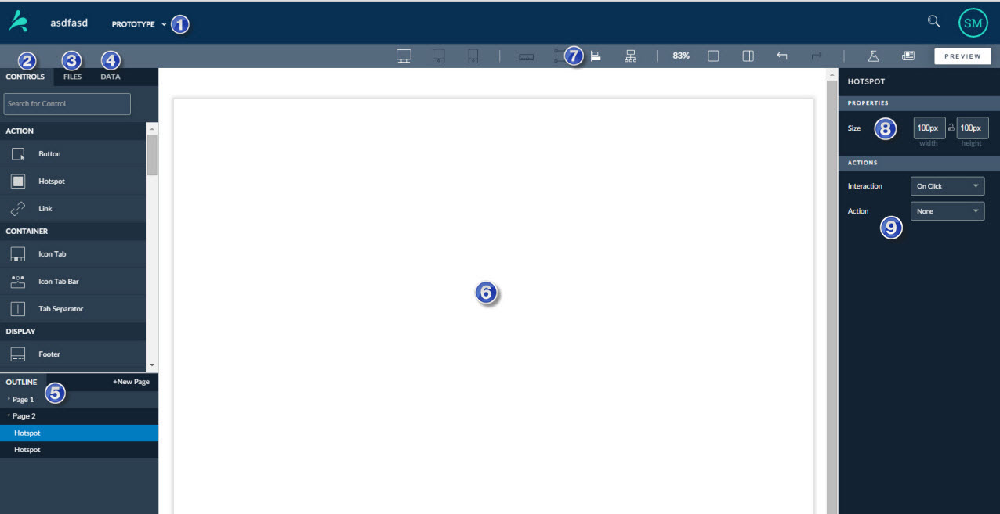

The User Interface (UI) Editor is in the Prototype Tool. Use the UI Editor to create interactive prototypes.
This image shows the Prototype Tool includes tools with descriptions in the table below.

|
Tool |
Description |
More Help... |
|---|---|---|
| 1. Tool Picker | Use the Tool Picker to switch between the Prototype, Research, and Files tools. You can also return to the project page from the Tool Picker. | Tool Picker |
| 2. Controls Tab | Choose from a variety of built-in user interface controls, like buttons, hotspots, and calendars, to make your prototype interactive | Controls Tab |
| 3. Files Tab | Lists project images you drag onto the canvas in the UI Editor or project files yo upload from the Files Tool. You can upload various types of project-related files in the Files Tool. | Files Tab |
| 4. Data Tab |
Access the Data Editor to create and bind data, and to import sample data for a more realistic prototype. |
Data tab |
| 5. Tree View | Includes a list of content in your prototype, including controls, pages, and so on. | Tree View |
| 6. Canvas | This is your workspace for creating prototypes. | Canvas |
| 7. Toolbar | Various options you can use to customize your prototype and canvas view. | Canvas |
| 8. Properties | Customize the look and feel of your prototype, including button lables, color, and so on. | Properties |
| 9. Actions | Make your prototype interactive by customizing what the controls do in your prototype. | Actions |